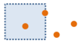
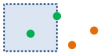
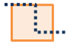
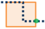
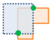
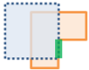

Các Lớp Phủ

Lớp phủ kết hợp hai hoặc nhiều lớp vào một lớp duy nhất. Bạn có thể nghĩ về việc chồng xếp lớp như nhìn qua một xấp bản đồ và tạo ra một bản đồ duy nhất có chứa tất cả các thông tin tìm thấy trong xấp bản đồ đó. Lớp phủ không chỉ là sự kết hợp giữa các luồng công việc; tất cả các thuộc tính của đối tượng tham gia vào lớp phủ đều được đưa vào sản phẩm cuối cùng. Lớp phủ được sử dụng để trả lời một trong những câu hỏi cơ bản nhất về địa lý, "Cái gì nằm trên cái gì?"Ví dụ:
- Lô đất nào nằm trong vùng ngập lụt 100 năm? (Khái niệm Trong vùng chỉ là một cách nói của việc Nằm trên.)
- Con đường nào ở trong quận nào?
- Đất sử dụng nào nằm trên loại đất nào?
- Giếng nước nào nằm trong căn cứ quân sự bị bỏ rơi?
Nếu chọn Sử dụng phạm vi bản đồ hiện tại, thì chỉ các đối tượng được nhìn thấy trong lớp đầu vào và lớp phủ bên trong phạm vi bản đồ hiện tại mới được chồng lớp lên. Nếu bỏ chọn, tất cả các đối tượng trong lớp đầu vào và lớp phủ sẽ được chồng lớp lên, ngay cả khi chúng ở ngoài phạm vi bản đồ hiện tại.
Chọn lớp đầu vào
Lớp điểm, đường, hoặc vùng sẽ bị chồng lớp lên.
Bên cạnh việc chọn một lớp từ bản đồ của bạn, bạn có thể chọn Chọn Lớp Phân tích ở dưới cùng trong danh sách xổ xuống. Tùy chọn này mở ra một thư viện, tại đó bạn có thể duyệt và chọn các bộ dữ liệu từ nhiều nguồn khác nhau để sử dụng trong phân tích của mình.
Chọn lớp phủ
Lớp dùng để chồng lên lớp đầu vào
Bên cạnh việc chọn một lớp từ bản đồ của bạn, bạn có thể chọn Chọn Lớp Phân tích ở dưới cùng trong danh sách xổ xuống. Tùy chọn này mở ra một thư viện, tại đó bạn có thể duyệt và chọn các bộ dữ liệu từ nhiều nguồn khác nhau để sử dụng trong phân tích của mình.
Chọn phương pháp phủ
Phương pháp chồng lớp xác định cách kết hợp giữa lớp đầu vào và lớp phủ.
- Giao cắt—Kết quả sẽ chỉ chứa các đối tượng hoặc một phần đối tượng này trong lớp phủ mà được chồng lớp bằng các đối tượng trong lớp đầu vào. Khi giao cắt đối tượng đường hoặc vùng, bạn có tùy chọn để chỉ định loại đối tượng bạn muốn làm đầu ra.
Điểm với Điểm


Điểm với Đường
Điểm với Vùng

 Đường với Đường


Đường với Vùng


Vùng với Vùng




- Hợp nhất—Kết quả sẽ chứa các đối tượng từ cả lớp đầu vào và lớp phủ. Tùy chọn Hợp nhất chỉ khả dụng nếu cả lớp đầu vào và lớp phủ đều chứa đối tượng vùng.
- Xóa—Kết quả sẽ chứa các đối tượng hoặc một phần đối tượng trong lớp phủ mà không chồng lớp bằng các vùng trong lớp phân tích. Lớp phủ có thể chứa các đối tượng vùng, đường, hoặc điểm.
Nếu chọn Sử dụng phạm vi bản đồ hiện tại, thì chỉ các đối tượng nhìn thấy trong lớp đầu vào và lớp phủ bên trong phạm vi bản đồ hiện tại mới được chồng lớp lên. Nếu bỏ chọn, tất cả các đối tượng trong lớp đầu vào và lớp phủ sẽ được chồng lớp lên, ngay cả khi chúng ở ngoài phạm vi bản đồ hiện tại.
Tên lớp kết quả
Đây là tên lớp sẽ được tạo trong mục Nội dung của Tôi và thêm vào bản đồ. Nó sẽ có kiểu đối tượng tương tự (vùng, đường, hoặc điểm) như lớp phủ. Tên mặc định dựa vào phương pháp chồng lớp và tên lớp đầu vào. Nếu lớp đã tồn tại, bạn sẽ được yêu cầu bạn cần cung cấp tên mới.
Sử dụng hộp xổ xuống Lưu kết quả trong, bạn có thể chỉ định tên thư mục trong mục Nội dung của Tôi nơi sẽ lưu trữ kết quả của bạn.